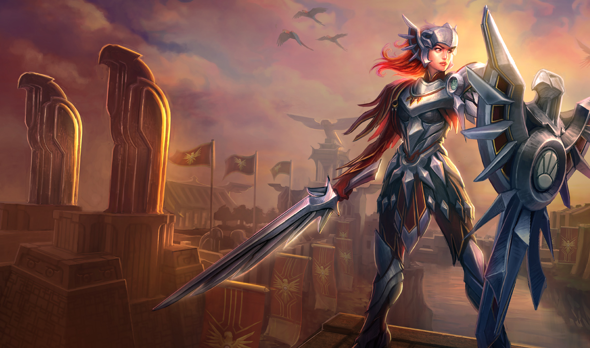
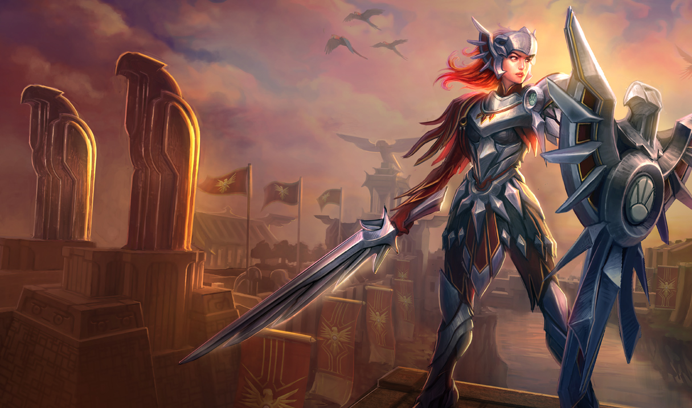

A support is someone who makes their teammates stronger, primarily by substantiating the Marksman. The best supports are those who have a lot of crowd control effects
like stuns, slows, snares, knock ups, silences, and things such as that. They also have abilities that help or buff their allies like shields, heals, movement speed
boosts, and stat buffs. Sometimes a tanky character will go support, meaning that theyre also going to provide a good initiation factor for the character, though
well get into tanks further down.
At the beginning of the game, a support is key for early kills in your lane. A good support is someone who will try to poke the enemies while the Marksman farms
minions, and when the opportunity is right, they will pin the enemy Marksman down so your laning partner can secure the kill. Leona is an example of a support who is
great at pinning them down. She can set up kills by zhooming to the enemy and stunning them in place while your ally finishes them off.
If your laning partner, the Ranged AD Carry/Marksman, is doing his job correctly, then he should have some kills under his belt. Often, if he is killed, the other team
will get extra gold because he was on a killing spree. You do NOT want that to happen. Do all that you can to keep him alive, and if it comes down to it, sacrifice
yourself so that he can get away and live. You do not want the enemy team to get the gold bounty on his head.


 
